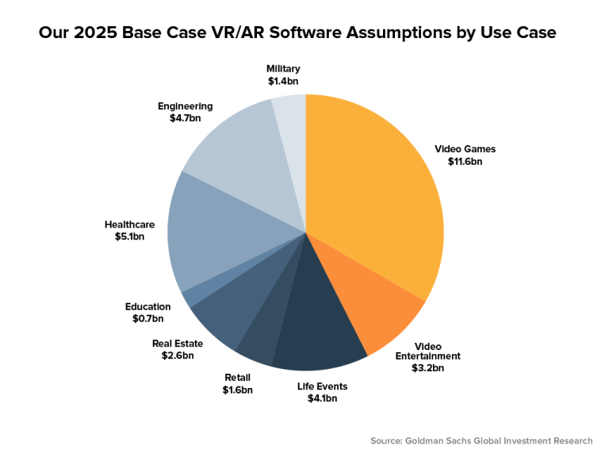
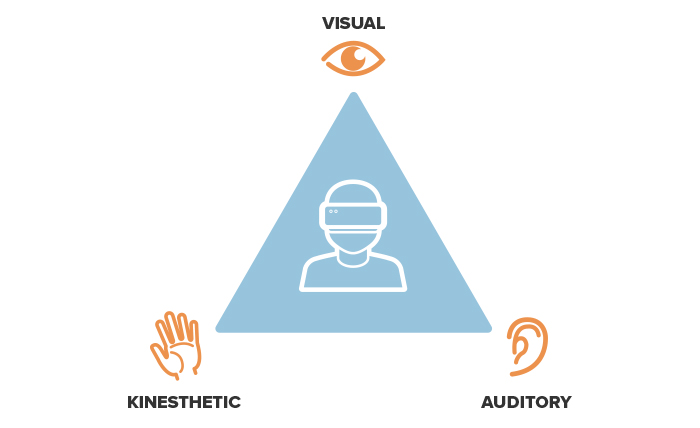
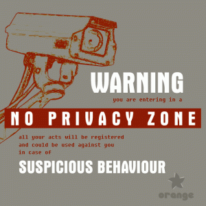
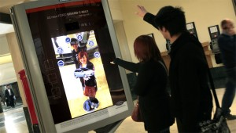

"Without technology, humanity has no future, but we have to be careful that we don't become mechanised that we lose our human feelings..."
-Dalai Lama
How The Growth Of Mixed Reality Will Change Communication, Collaboration And The Future Of The Workplace

Mixed reality has the potential to allow a global workforce of remote teams to work together and tackle an organization’s business challenges.
Mixed reality, or hybrid reality, merges real and virtual worlds to produce new environments where physical and digital objects co-exist and interact in real time.
I’m not talking about plugging into the Matrix as a means for improved communication. I’m talking about the ability for two people across the world to put on a headset and share any experience they choose — whether it’s to sit next to each other and physically flip through a photo album or to visit their dream destination.
Five or 10 years ago, we used text to communicate. Today, we communicate and share with photos and videos. Tomorrow, with VR, we’ll be able to communicate with experience.
What does this mean for the future of the workplace?
For one, it means improved collaboration. Mixed reality has the potential to allow a global workforce of remote teams to work together and tackle an organization’s business challenges. No matter where they are physically located, an employee can strap on their headset and noise-canceling headphones and enter a collaborative, immersive virtual environment.
Language barriers will become irrelevant as AR applications are able to accurately translate in real time. Imagine Google Translate acting in real time between two or more people.
It also means a more flexible workforce. While many employers still use inflexible models of fixed working time and location, there is evidence that employees are more productive if they have greater autonomy over where, when and how they work. Some employees prefer loud workspaces, others need silence. Some work best in the morning, others at night.
Employees also benefit from autonomy in how they work because everyone processes information differently. The classic VAK model for learning styles differentiates Visual, Auditory and Kinesthetic learners.[1]

Popular Research Subfields within MR
3D Fabrication
3D fabrication is the process of conceptualisng, constructing, printing and assembling 3D objects. Objects for print are usually modelled from scratch through the use 3D modelling software, or converted from existing 3D formats. From these digital formats they are brought to life through a process called additive manufacturing, where the model is split horizontally into layers which are printed directly on top of each other using specifically designed filament.[2]
Disadvantages??
Privacy

Nevertheless, all of this causes great concern for the privacy of its users and realistically Augmented Reality cannot come without its drawbacks. Here in the UK we are anything but anonymous and some people are unaware of how much of their personal information is accessible to complete strangers. Although it is not an issue for us in the UK at the moment because very few have began to use this service, it is a big thing in Japan. However, they have little problems with privacy as people remain very anonymous in Japan even though they have all the social media platforms that we do (if not more), the most you could get hold of is their email address. We seem to not have anything holding us back to uploading everything about ourselves; where we live, who we hang around with, and even what we’re doing at the weekend. They do not even have pictures of themselves up on their profiles in comparison to our 500 photos!
Will it ever take off?

It is all very well and good if PROs start to include this media platform in their campaign tactics however it is not definite that it will take off in the UK like it has in Japan. It is important to remember that part of Japanese culture is to be tech savvy and it is not part of ours. But, maybe we are just being naive if we believe this will never take off and no one will ever use it here in the UK. It was only 20 years ago people would have laughed in your face if you said most households will have on average 3 computers/laptops by 2010. We can already see augmented reality being used by companies for promotional purposes. Ford has just launched an “augmented reality outdoor campaign to put its new C-Max model in the palm of consumers’ hands”. It will project a virtual image of the car and allow passersby to have a go. It is claimed that it is the first outdoor campaign to use augmented reality in the UK – and it undoubtedly won’t be the last.[3]